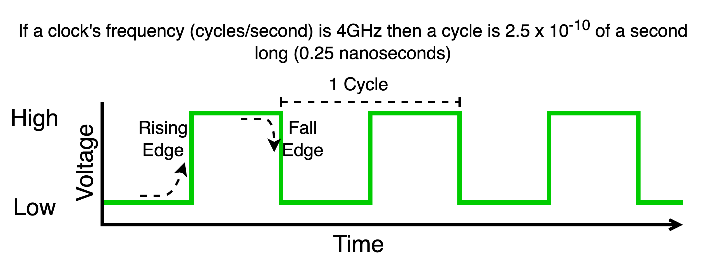

13. The von Neumann Architecture#
NOTE about reading this chapter: We recommend that you first read this chapter skipping over the blue text boxes and then go back and read them after
As we saw in the introduction, assembly code directly maps to the native machine code of a computer. As such, the assembly instructions allow a programmer to directly use and control the basic functions of the computer. In this way, the programmer can direct the behavior of the computer as they please, whether that is to search or sort an array of numbers, play a music file or some other task.
But to understand assembly programming, we have to first learn what the basic parts are of any computer are and how they work. Only then can we understand what the assembly instructions allow us to do with those components. This is why understanding how computers and software work is one and the same with learning assembly programming.
---------------------------------------------------------------------------
NameError Traceback (most recent call last)
Cell In[2], line 1
----> 1 display(Markdown(htmlFig("../images/edvac.png",
2 align="center",
3 margin="auto 0 0 auto",
4 width="100%", id="fig:edvac",
5 caption="Figure: The archetype of the general-purpose digital computer")))
NameError: name 'htmlFig' is not defined
Despite the fact that there are many different manufactures of computers, they all largely share a basic common structure. We call the generic components, their organization and the way they interact with one another the architecture of a machine. In our case, the common architecture to which most programmable computers are built is the von Neumann Architecture, named after John von Neumann.
In our journey to understand computers we will be exploring a fascinating story of human innovation and ingenuity. This story is full of characters, such as John von Neumann, Alan Turning, Admiral Grace Hopper, Ada Love Lace, and many more, that dared to be and think differently. Not only do we owe a great deal of gratitude to these courageous people, who often risked a lot in suggesting new ways of thinking and doing things, challenging the orthodoxy of their day, we can also draw inspiration in their diversity and bravery. Remember who you are and that your voice matters. Tomorrow’s innovation rests on your actions!
13.1. The Central Processing Unit (CPU)#
There are many words that we might hear used today to refer to the Central Processing Unit (CPU), including processor, micro-processor and core. Our goal, at this point, is to build our knowledge of how all computers work before diving into more detail by looking at how a particular computer works. From this more generic perspective, there are two ways of considering what a CPU is.
Physically: A complex electrical device composed of transistors and wires.
Logically: A core building block for programmable information processing
13.1.1. Physically#
While we won’t dwell too much on the physical nature of a CPU, it is worth “looking” at a few examples and noting a few of their characteristics, along with various challenges we face in building more advanced versions. These challenges arise from physical limitation in the construction, connection to other devices, and powering of the CPU itself. These challenges, combined with the current approach for mitigating them, also hava an effect on how one needs to write software that will perform well on modern hardware. We don’t really need to worry about that right now, but it is a theme we will revisit once we have a core understanding of the basics of how software and hardware interact.
In the Examples of physical CPUs figure, above, we see photos of some physical CPUs along with a “pin out” diagram that describes how to physically connect it to the rest of the computer. Over the years, it is clear that the complexity of CPUs has certainly grown. In the 1970’s, CPUs were composed of thousands of transistors and only required tens of pins to connect to rest of the computer. By 2021 we see that CPUs now contain billions of transistors, and require thousands of physical connections to the rest of the system. We have, in fact, pushed the physical boundaries to the point that it is unclear exactly how we can make more powerful CPUs that still preserve a simple programming model. The way software is written and structured becomes more and more important in order to get most out of a computer. But, the first step to understanding how to construct advanced software is understanding the basics of how the parts of a computer interact to execute software.
 While it is an oversimplification, one of the uses of transistors in a CPU is to create, "switches" that form the logic circuits used to implement basic operations such as adding numbers. In order to make the CPU do these operations faster, we need to be able to operate the transistors (turn them on and off) faster and faster. Unfortunately, doing so requires more and more energy, and thus creates more and more heat. As such, over the last decade it has become harder and harder to speed up CPUs given the increase in energy and increase in heat it leads to. On the other hand, we have managed to figure out how to continually shrink the size of transistors. This has allowed us to pack more and more transistors into CPUs; however, some believe that we are getting to end of this ability as we are approaching the physical limits of how small we can make a transistor.
While it is an oversimplification, one of the uses of transistors in a CPU is to create, "switches" that form the logic circuits used to implement basic operations such as adding numbers. In order to make the CPU do these operations faster, we need to be able to operate the transistors (turn them on and off) faster and faster. Unfortunately, doing so requires more and more energy, and thus creates more and more heat. As such, over the last decade it has become harder and harder to speed up CPUs given the increase in energy and increase in heat it leads to. On the other hand, we have managed to figure out how to continually shrink the size of transistors. This has allowed us to pack more and more transistors into CPUs; however, some believe that we are getting to end of this ability as we are approaching the physical limits of how small we can make a transistor.
Regardless, we have reached a point where making CPUs operate faster is very hard to do, and while we might be able to fit more transistors on the chip, we are reaching the limits of how many we can have powered on at the same time (due to energy and heat constraints). Finally, it is also very hard to imagine that we can fit many more “pins” that connect the CPU to the rest of the computer.
Over the years these effects have resulted in a situation where the performance of the software we write has become more and more dependent on how it interacts with the internal way the extra transistors are used. For example, in a modern processor, a large number of transistors are used to form what is called cache memory. While software can benefit from performance increases due to caches, writing the same software in different ways can impact performance (positively or negatively) depending on how that software interacts with the cache. In understanding how the caches work and the way your software interacts with them, you gain the ability to write better and more efficient programs. Similarly, today’s CPU’s often use the extra transistors to create multiple internal sub-CPUs, called cores. A program, however, does not automatically benefit from multiple cores unless it is written to explicitly exploit them via “parallel threads” of execution. To understand how to do this, one first needs to understand the classic model by which a single core CPU works, and its interaction with memory.
The bottom line is CPUs are complex organizations of transistors and we are reaching the physical limits to their construction.
13.1.2. Logically#
There is a common “logical” model of operation to von Neumman computers that defines how software execution works and therefore what software is exactly. Our goal for this chapter is to understand this logical model, not the details of a particular computer. The CPU’s operation is at the heart of this logical model, as understanding this operation is core to understanding and programming a computer.
Logically a CPU has:
A set of internal components
Connections to the computers other two main parts – Memory and Input/Output (I/O) devices
A core “Loop” that combines and coordinates the CPU’s internal components with Memory and I/O devices to execute programs.

It is a common logical model that makes it possible to learn the basics of how a generic CPU works and to understand how software executes on any computer. As a matter of fact, if we consider the line of CPU’s from INTEL, software written on a 1970’s version of their products can still be run on the CPU’s they produced in 2021. This is because at the heart of it, the 2021 version still remains consistent with the basic model of a computer that the 1970’s CPU was built around. Similarly, the basic model of programming and the tools used are consistent across computers, regardless of whether they are based on an old 6502, or a modern X86 or ARM CPU.
First Principles We are comfortable with the idea of using a first principles understanding of a subject, like mathematics, to be able to reason about new problems we face in that subject, without having to limit ourselves to blind memorization of facts and recipes for doing things. Computing is no different. Understanding the core ideas of how computers work, including a foundation in the theory of computer science, can allow you to transcend simply regurgitating snip-its of code you have memorized. Armed with this foundational knowledge, you can truly unleash your ability to creatively build new things. For that matter, it also allows you to gain an intuitive understanding of how things work - an understanding that enables you to debug and solve problems in situations where others would not know where to begin. Learning the first principles of how computers work is your first step in becoming a master of the digital universe.
13.2. Visualizing a generic von Neumann computer#
In order to understand a generic model of a von Neumann computer, we will use a series of diagrams that progressively visualize the components and show how they interact to execute a program.
There are many ways that one can “build” a computer around the von Neumann model. The one we present is designed to make it easy for us to concretely understand the model and make connections, at least logically, to modern systems. Each part we introduce corresponds to elements that are reflected in the “real” computers. More importantly, perhaps, an understanding of these parts is necessary in order to program any modern computer. That being said, at this stage, we avoid details specific to how modern systems have evolved. Once one has a good understanding of the basic generic model, one can then understand how things have varied over the years.
At the end of this chapter we use the SOL6502 simulated computer to explore the parts and model in action.
13.2.1. The CPU#
|
|
The CPU is a distinct physical region of the computer. Housed within it are several important parts that we need to understand.
13.2.2. Operations#
|
|
Within the CPU there are circuits/components that provide a set of operations. The exact set of operations and the number can differ widely between particular CPU brands and models (eg INTEL vs ARM). However, commonly we can expect operations that 1) perform arithmetic and logic (eg. adding and comparing numbers), 2) move values into and out of the CPU, 3) Control what happens next. Collectively the ones that perform arithmetic and logic are often referred to as the Arithmetic Logic Unit (ALU).
In the diagram, we can think of each blue labeled operation box as a unique operation that the CPU supports.
As an example, the box labeled OPERATION 2 might implement the addition of two input values to produce a single result value.
The designers of a particular CPU, like INTEL, choose and define the set of operations for their CPUs, and must tell us what they are and what they do.
From our perspective, the most important thing is that the set of operations form the ‘built-in’ functions that we can use in our programs for the particular CPU we are working with. Given that the operations are CPU specific, our programs will inherently be CPU specific.
13.2.3. Registers#
Registers are memory locations within the CPU that are connected to the operation circuits. Each register has a unique fixed name and a value that can be changed. Their values can be fed as input to an operation, or set as as the output of an operation. Typically, there are three categories of registers: 1) General Purpose Registers (GPRS) 2) Special Purpose Registers (SPRS) and 3) Hidden Registers.
With respect to “normal” programming, we largely only need to concern ourselves with the the GPRS and knowing about a couple of standard SPRS. As we will see soon, it will also be useful to explicitly introduce at least one of the registers that are usually hidden from programmers to make understanding execution easier.
What do we mean by “normal” programming? As we saw in Part I: The UNIX Development Environment software is largely broken down into two parts: 1) application software that runs within processes and 2) a single operating system kernel composed of software that provides all processes with a wide range of special functions. This includes the ability to create processes from an executable file and to share the computer among the processes. Most CPU’s provide a special mode of execution for the OS kernel. In this mode, an expanded set of operations and SPRS are available for use. OS kernel software uses the GPRS, SPRS and the expanded set of operations to implement its routines. We typically call this mode of operation Privileged” , and as such we often call the kernel software privileged code, and the application or user software unprivileged. Privilege provides the kernel with expanded access to the hardware resources of the computer . Many CPUs expand on this idea to provide multiple levels of privilege, which enables a further degree of layering of the system’s software. For example, many CPUs use extra levels of privilege to introduce support for a virtual machine monitor (or hypervisor) layer of software. This software can sit below standard operating system kernels, and allow the hardware to be shared by multiple OS’s that each think they are running on the computer by themselves.
We will visualize registers as boxes within the CPU. Each box will be broken down so that the name of the register will be on left, and the space for the value it contains is on the right.
13.2.3.1. General Purpose Registers (GPRS)#
|
|
The general purpose registers provide us with a place to store input and output values for operations we want to conduct. In general, the number of GPRS is small - often less than 50. In later chapters we will go into more detail on how values are represented in registers. For the moment, it is sufficient to think of them as generic places to hold the values that we want to immediately work with in our code using the built in operations of the CPU.
A typical thing we might want to do is use an add operation to add the current values in two of the GPRS, replacing
the existing value of one of them with the result. For example, given our diagram so far, one would expect there to
be a way to have OPERATION 2 (which we will assume to implement addition) take its input values from R0 and R2 and
place the output result back in R2.
Given that there are a small number of GPRS, it will be our responsibility to use them wisely and organize which
values of our program are stored in which GPRS at any given time. Furthermore, it will be our job to move values into and out of them to
deal with the fact that we have so few. CPUs have operations dedicated to transferring values between the GPRS.
For example, given our illustration, one expects there to be an operation that would allow us to transfer the
current value of R2 to R4, replacing R4 existing value. Such register-to-register transfer operations permit
all such combinations of GPR transfers. Additionally, there will be operations for moving values between
locations outside of the CPU and the GPRS. But more on this when we add connections from the CPU to Memory.
13.2.3.2. Instruction Register (IR)#
|
|
The CPU has a built in code. This code is composed of numeric values that specify what operation to conduct and where the inputs and outputs come from and go to. We call such values Opcodes. Given how the CPU Loop works, as we will see soon, it is not actually necessary for us, as programmers, to know how and where the opcode we want the CPU to execute is stored within the CPU. As such this detail is generally hidden from us by the manufacturer. However, in order for us to gain a concrete working understanding, it is worth explicitly introducing a special purpose register which we will call the Instruction Register (IR). Our model of the CPU will use the IR to store the opcode that we want the CPU to execute. Again, while modern CPUs do not necessarily document the IR in their programming manuals, also called their Instruction Set Architecture (ISA) manuals, they internally will have something that serves this purpose.
Instruction Set Architecture (ISA): This is the term used by CPU manufactures to referred to the details of their specific CPUS that a programmer needs to know about to write code and implement tools for computers that use their CPUS.
13.2.3.2.1. OPCODE and OPERANDS#
An Opcode is an encoded value that identifies a particular operation, where it’s inputs come from, and where it’s output, if any, should go. Inputs to an operation are typically called Operands. You will often find that the term instruction and opcode will be used interchangeably. For historical reason one is used in some context versus the other.
13.2.3.3. Program Counter (PC)#
|
|
CPUs have a special purpose register that indicates where in memory the opcode that we want executed is located. This register is typically called either the Program Counter (PC) or Instruction Pointer (IP). This register is only used for this purpose and unlike GPRS cannot be used to store arbitrary inputs or outputs of operations. Rather, its value is only treated like an Memory Address where an Address is a number that indicates a position in the Memory array that is external to the CPU. As we will see, the value in the PC is used to load the IR with the opcodes of our program.
13.3. Memory#
|
|
While the CPU is the central part of the computer that has the ability to do operations it is limited in the number of registers it has and further we have no direct way of placing values into the CPU’s register. This is the core role that the memory of a computer serves.
Memory is a large collection of devices, external to the CPU that can store values. These devices are organized into an array in which each device has a unique numeric index called its address. The memory of a modern computer is on the order of \(10^9\) locations. The CPU has sets of wires, called the Memory Bus, that physically allow the values from the memory devices to be electrically transfered between the registers of the CPU and the locations in memory and versa. The memory Bus is broken down into to an Address Bus and a Data Bus. The CPU uses its connection to the address bus to place a value that is interpreted by the Memory controlling hardware as the address of where in memory the transfer should happen. For example by placing \(5\) on the address bus the CPU is activating the memory devices at address \(5\). The Data Bus is used to communicate the value that the CPU wants to send, write, to the address it has activated via the address bus or that the memory at the activated address is to sent to the CPU (read).
The act of transferring values on the Memory Bus is called a Bus Transaction. And as we have seen there are two types A Write transaction and a Read transaction. Writes are also some times referred to as Stores and Reads as Loads.
The set of memory devices connected to the address bus is also some times called “main” memory to distinguish it from other types of devices on the computer that can store values. Typically there are three defining features of memory in addition to there being a large number of them:
The CPU has direct access to them via the Memory Bus
The majority are Volatile. They consume electricity to maintain their values and if the computer is turned off or if it’s battery dies it’s values will be lost. Typically when first turned on such devices will have random values in them.
Compared to other types of memory they are fast with respect to the time it takes the CPU to communicate values with them.
Like the GPRS as a programmer it is our responsibility to organize and manage where and what values are placed in memory. Memory is like a big blank sheet of paper on which we organize our work in terms of values that encode the various aspects of our program; Opcodes and Data. This last aspect will make more sense when we look at how program execution works next. Many of the tools like programming languages and operating systems are precisely there to help us with the tasks of expressing, organizing and loading our program as values into memory.

It is important to remember, to make use of a value in memory it must be transferred into the CPU, similarly updated values must be transfer back from CPU registers to memory.
When we buy personal computing devices such as laptops and phones a key feature of them is how much main memory they have. But sometimes you really have to pay attention to figure it out. Main memory will often be referred to as RAM (Random Access Memory) the other types of memory that are not directly connected to the CPU will often be referred to as Storage. While these types of devices permit you to store data on your phone the CPU cannot use them directly to run you programs.
13.4. Program Execution#
Now that we have introduced a set of components, and their organization, we can move on to use them to illustrate and understand what it means to execute a program.
13.4.1. Setup:#
There are two steps that we must perform before we can have the computer execute our program: 1) we must load the values that make up our program into memory and 2) we must minimally initialize the CPU’s PC register.
13.4.1.1. Program: Values in Memory#
|
|
To program we must have first studied the opcodes of our computer’s CPU. We then must pick an address in memory where the opcode values
of our program will be loaded and then write our program as opcodes at that location (we will discuss data values later).
The figure to the right illustrates a simplified example fragment of a program made up of three values that have been
loaded into memory starting at address \(5\). In this simple example we will assume that the first value \(146\)
encodes the addition of the current values in R0 and R2 with the result being placed back in R2. And that
the values 36 and 1 together encode storing the value in R2 to memory at address \(1\).
Of course a real program would be composed of many more memory values and we to be sensible we would have
first transferred useful values into R0 and R2. But once we understand the basics of
how execution of a single instruction works and how we move on to the next one there is very little more to understand.
At that point extending this program is nothing harder than loading more values into memory.
13.4.1.2. Initialize the PC to location of first instruction#
|
|
Before we can start the process of execution we must initialize the PC to the address in memory of where we want it to start executing. There are several ways to do this. When we are using an operating system this is taken care of for us by the OS when it loads our program (we will examine this process in later chapters). For the moment we will assume we have the magical ability to reach into the CPU and set the PC to a value. In our example we see that we have set the PC to address 5 which is where we loaded our code. At the end of this chapter when we use the SOL6502 to explore program execution we will use the ability it gives us, as a teaching computer, do precisely this – directly set the PC value. It is worth noting one can also have this magical ability on a real computer when using machine level debugger. Finally, when working with the hardware directly, before an OS is started or if you are not using one, the CPU provides a Reset sequence to help with initializing the PC (and other CPU registers).
13.4.1.3. Categorizing values and their Interpretation#
Staying organized is very important when programming at this level. To help we have some standard conventions for referring to the two main categories of values we load into memory to form our programs.
13.4.1.3.1. Text#
Sets of values to be loaded into memory that encode opcodes and their operands for the CPU to execute are called text. We call areas of memory in which we load text values executable.
13.4.1.3.2. Data#
Sets of values to be loaded into memory that purely encode various forms of data that we want our program to operate on, such as numbers of various types or ASCII strings, we unsurprising collectively call data. The main distinction is that as a programmer we don’t intend for these values to be treated as opcodes and thus executed. By forming this distinction the tools we use can try and help us catch bugs in our program which lead it to accidentally attempting to execute values from areas of memory that contain data. See the Challenges of Interpretation for a more general discussion.
13.4.2. The Execution Loop#
At the heart of the CPU is a built in infinite loop that coordinates the parts of the CPU and memory to enable program execution, the successive execution of instructions. The following Figure, The Loop has extracts from early processor manuals that describe at a high level this loop. Our generic CPU breaks this down into three distinct internal phases:
Fetch
Decode
Execute
We do this so that we can have a clear understanding of what a von Neumann CPU must do to execute a program. The internal operations of modern CPU’s have evolved extensions to improve performance but regardless they generally maintain this same basic view of execution. This allows programmers to start with this basic view to both understand how software works and to understand the purpose of the extensions and how to write code that is exploits them.
13.4.3. Step 1: Fetch Opcode#
|
|
Fetch: The step of the CPU program execution loop is the act doing a read bus transaction to the address “pointed” to by the PC to load the IR with the value there so that it can be executed. When we interpret a number as a memory address we often say that the value “points” to then value in memory at that address. This is why some manufactures call the PC register an Instruction Pointer (IP) Register.
In our example this means that the CPU places the address value contained in the PC (\(5\)) onto the address bus and the memory responds by placing the value at that address onto the data bus (\(146\)) . When the CPU receives the value it internally routes the value into the IR.
Generally speaking the number of values, measured in bytes, that encode instructions (opcodes) vary widely depending on the design of the CPU. As a matter of fact this is one of the things that distinctly distinguishes the INTEL instruction set from the ARM instruction set. The length of an INTEL instruction are variable with some encoded in as few as a single byte while others can require fifteen. In contrast the ARM arch64 instruction set uses a fixed length encoding of four bytes for all instructions. The 6502 instructions require either one, two or three bytes. Instruction sets like INTEL are called complex instruction set computers (CISC), both because of the complexity of the instruction encoding and the rich and high-level nature of operations they provide. Where as ARM like instruction sets are called Reduced Instruction Set Computers (RISC), both due to the fixed and simple nature of the encoding and the relatively simple nature of the operations they provide.
13.4.4. Step 2: Decode#
Certain things happen in the decode phase: 1) Identify which operation is to be executed 2) determine where the inputs are coming from (getting them from memory if needed) and 3) setting up where the output will go. The parts of the CPU that do the setup is often called the control plane/path of the CPU. We are not particularly concerned with details of how this is implemented in the CPU what we care about is have a concrete knowledge of how an opcode is interpreted – decoded. As such we artificially break it down into decoding down into three distinct steps for clarity.

|
Perhaps the obvious thing that needs to be done is to identify which internal operation unit
is required to do the work encoded in the opcode. In our example our CPU is built to interpret the opcode
value of \(146\) as targeting OPERATION 2. To be concrete and consistent with our example, we define OPERATION 2 to
implement addition. That is to say it takes in two values as inputs and produces the sum as output. In a real CPU the operations
and what are called functional units (the components that do the work) may not have such a simple one to one relationship and the setting
up of which functional units need to be used to conduct the operation could be much more subtle and complex.
|
|
In addition to which operation is to be executed the opcode also encodes where the input operands,
if any are required for the particular operation must come from and where any outputs should be written too. In our example, the opcode \(146\) identifies that the two values for the addition
should explicitly come from R0 and R2. We visualize this as the control path of the CPU configuring the operation unit, OPERATION 2, to
receive its inputs from the two specified GPRS.
13.4.4.1. Addressing Modes#
More generally, most CPUS support several ways of specifying where the operands for an operation can come from. These are called addressing modes. In the example, since all the operands, specified by the opcode \(146\) are in GPRS this might be called Register address modes. Depending on the CPU opcodes can encode many other variants, examples include:
Implied: no operands are required or the operands come from a fixed set of register (eg. an instruction might implicitly use the value in the PC as an operand)
Memory: an operand is located in memory and additional memory bus transactions will be necessary prior to executing the operations (there are usually several memory addressing modes)
Memory Addressing Modes It is the second case of address modes, where an operand is located in memory, that adds much of the power and complexity to assembly programming. We will explore memory addressing modes in more detail in subsequent chapters. For the moment there two things to note:
If an operand value is in memory, we will need to have a way of figuring out its address (often called the operands Effective Address). As such there can be several address modes that support various ways of calculating the effective address. There is no standard set of addressing modes, rather each CPU will define their own. That begin said most CPUs provide some variation of at least the following:
Immediate: the effective address of the operand is the next locations after the first values of the opcode. In other works the operand value is encoded in the instruction values in memory.
Absolute: the effective address is encoded in bytes of the opcode. This is the case in the second instruction of our example.
Address \(6\) and \(7\) encode the store of the value ofR2into the memory location \(1\). In this case the opcode 36 encodes a store of the value in GPRR2to the address who’s value is stored in the second value of the instruction, address 7. Given that the value at address \(7\) is \(1\) we know that the effective address of the store is the location \(1\).Register Indirect: the effective address is calculated using values in one ore more registers. Eg. The effective address is the sum of the value in
R3andR4.
Additional memory bus transactions will be required get the needed values from memory.
13.4.5. Execute : Conduct the operation and update the PC#

|
Once the opcode has been decoded and if any additional memory bus transactions were required to fetch operand values from memory have completed, the operation unit is activated.
The activated unit performs its function and the specified output locations are updated. In our figure we visualize this with the operation unit being coloured yellow and the updated value in R2.
Once the operation unit is done it is deactivated but any values updated will of course remain.

|
Additionally, unless the operation explicitly set the PC to a new value the PC will be incremented by the number of values that encoded the current instruction. In our diagram, given that the first instruction only took one value to encode, the PC is incremented by one. It now contains the value \(6\) which is the address where the next instruction in our program is encoded.
The exact point at which the PC is updated varies from CPU to CPU but what is critical is that it is done before the current execution loop iteration is considered completed.
All CPUs contain a special category of “control flow” operations (jumps, branches, calls) that will override the default update of the PC so that the program can force the PC to a programmer specified value. This allows the programmer to have the control to redirect execution to an alternative address where they have placed opcodes. This ability is the core that we use to implement high level programming ideas like loops, if statements, switches and functions.
13.4.6. Repeat : Back to Step 1 of the Loop and on we go.#
|
|
At this point we are done all the steps of one iteration of the execution loop and one instruction of the program
that was loaded into memory has been executed. At this point the CPU will simply go back to step 1 and repeat the
process over and over again. In our case this will mean fetching the value at address \(6\) into the IR.
Decoding this value, \(36\), as a store of the value in R2 into the address that is encoded in address \(7\)
which is \(1\). Thus it will transfer the value in R2 to the memory location \(1\).
The figure to the right illustrates the state of the compute after the second instruction of our program has completed.
Notice that the PC is now pointing at address \(8\). So what will happen next? It is important to realize the CPU is just a blind infinite loop and will happy go onto interpret the value at address \(8\) as an opcode. In this case we will assume that blank means a location has some random value. So either it will be interpreted as some instruction or if we are lucky it will be an invalid instruction that causes an error that the OS (if we are using one) will catch and terminate our program. More likely however it will be correspond to some instruction that the CPU will happily execute, of course this instruction might very well overwrite values that we worked so hard to produce. It is our job not to let this happen! We must always direct the CPU to valid instructions of our program and if we are done then it is our job to ensure that the CPU executes instructions that transfers control to the OS letting it know we are done. If you are not using an OS then you better figure out what to do next with the CPU ;-).
It is important to note, there is no reason for our example CPU not to interpret any location in memory which has the value 36 as the start of a store instruction if the PC gets set to that address. There are many reasons why we might have the value 36 in memory at various locations. At some location we might be using it to encode the dollar sign character in ASCII or maybe at some other location we are using the value 36 to represent the age of a player in our game or maybe it is in the link field of a linked list node indicating that the memory address of the next node is 36. In all these instances we would not want to try and interpret those areas of memory as instructions by executing them.
This is indicative of the more general challenge. When it comes to programming a computer we must be very careful to not accidentally interpret a value at a location in a way that we did not intent for it to be. Most of our higher level programming tools and languages work very hard to help us avoid this by forcing a very strict organization on where things are put in memory and add checks to the code to make sure that the our program is not trying to interpret a memory location in a way was not intended. When programming in lower-level languages, like assembly and C, we have the power to direct the CPU to do anything it can. However, it is then our job to take care to interpret all values correctly, by staying extremely organized and writing careful code.
There is nothing that marks a particular address as containing a particular type of data item. The only thing that determines what the value at a location “means” is code that uses it! So you must organize memory and write code very carefully to avoid the computer from doing something you do not intend. Remember that a modern computer can execute hundreds of billions of instructions per second so once things go off the rails, because of a miss-interpretation of a value, many instructions can be executed after and you may or may not ever know that an error occurred and where or why!
13.4.7. Some additions to the basics of instruction execution#
In the next few subsections we will add a few more details to the basic features of the CPU and how execution is conducted.
13.4.7.1. Status/Flags Register#
|
|
Many CPUs have a special register, often called a status or flags register, that operations will update to indicate various things beyond its main output value. For example, an add operation might, additionally set values in the processor status register indicating that the result was zero or that the result exceeded the maximum value that a GPR can store.
13.4.7.2. Stack Pointer Register (SP)#
|
|
Most CPUs contain a register that is called the Stack Pointer (SP) Register. Software initializes this register to the beginning address of an area of memory that it wants to use as a stack. The CPU provides push and pop operations that use and update this pointer to place values in and get values back from this area of memory. Having this support is very useful as it provides a very easy way as a programmer to track and use memory for temporary data. As we will see it is also very useful for implementing software functions.
13.4.7.3. Reset#
As we read earlier, before we can use the CPU execution loop it is necessary to initialize the CPU’s PC register to the address of where we have loaded our program instructions. While this is usually handled by the OS when we start programs via the OS. But in order to facilitate getting the CPU executing code correctly when we are not using an OS (as is the case for SOL6502) the CPU provides a special reset procedure. Usually when you power on the processor it enters this reset procedure. Devices also often provide a physical button that can also put the CPU back into its reset procedure.
Each CPU varies in what the reset procedure does. The documentation for the CPU will tell the programmer what register will be initialized to particular values and what registers will not be (those that are not will have random values and it will be the initial software’s job to set these registers to known values). One of the critical jobs of the reset procedure is to have set the PC to a particular value. On some systems the value is a fixed address in memory on other systems the CPU will read the initial value for the PC from a fixed location in memory. In either case it is the system designer who must arrange to have the values in memory so that the starting software will correctly begin executing after the reset procedure. We will get to see how this works on the 6502 when we use SOL6502.
13.4.7.4. ROM and Firmware#
While most of the memory devices attached to the memory bus are volatile Random Access Memory (RAM) devices a small amount are not. Rather they are some type of Read Only Memory (ROM) devices. Unlike RAM devices these are not volatile meaning that they maintain their values even when the computer is off. As such they are usually attached to the memory bus so that reset sequence will set the PC to an address that points to startup code placed in these devices. This code is often called firmware. This code is software but because it is always present it is a little like the hardware. The firmware is responsible for taking over after the CPU reset procedure. It initializes the CPU and the rest of the hardware (including testing memory devices to make sure everything is working). After that the firmware is responsible for locating, loading and starting the operating system kernel which will take over from their and allow application programs to run.
On early computers it was easy to see the physical components that implement the parts of the von Neumann architecture (CPU, Memory and I/O devices) as can be seen in the images of the 1981 IBM PC in Figure A below. The manuals of the original IBM PC shows how the ROM devices are placed on the system to form part of the main memory (Figure B) and the manual also contains the assembly source for the firmware called Basic Input/Output System (BIOS) on these computers.
13.4.7.5. Modern Extensions and beyond#
Before we can talk about some of the extensions to the basic model of execution that modern CPUs incorporate we need to introduce the CPU clock and The Cycle.
13.4.7.5.1. The Clock and The Cycles#
While as programmers it is generally hidden from us it is worth known that the inner workings of the CPU execution loop is driven by an electrical oscillator called the CPU clock. This clock produces a continuous and pulse of high and low voltages. One cycle of the clock is the time it takes the clock to transit from a starting value, lets say low, go to high and then return back to low. This signal is what drives the inner workings of the CPU execution loop. The faster the frequency the faster the the loop operates and the faster instructions of our program complete. Different CPU’s will be able to operate at different maximum clock frequencies. Regardless though one cycle of the CPU’s clock can act as a reference unit for use to measure how fast our instructions are executing – Cycles per Instruction (CPI)
On a modern CPU different instructions, and for that matter sequence of instructions can require more or less cycles to complete. Many of the complexities added over the years are to try and improve the average number of cycles it takes for the instructions of a program to execute. Knowing how these features work allow you to write your programs in ways that minimize the number of cycles it takes. In this section we will provide some insight into these but not go into any details.
13.4.7.5.2. CPU caches#
One thing that should jump out at us is the amount of communication that is required between the CPU and memory to get work done. As we made CPU’s faster and faster the speed of the memory bus and the memory devices became the limiting factor in how long it took to execute instructions. The processors were spending more and more cycles “stalled” waiting for values to be received or sent from and to memory. To alleviate this disparity CPU designers added “cache” memories inside the CPUs and dramatically expanded the data bus. Programmers do not directly manage the caches, the CPU uses them internally to try and automatically improve performance. Rather than reading or writing single values at a time when accessing memory CPUs now transfer larger blocks of several near by memory values at a time staging these block in the caches. The caches close to the registers and can feed value to them very quickly. CPUs have particular caching algorithms built into them to manage the caches and data within them. The idea is that accessing a value at a particular address implies that the code will likely access the other nearby values as well. If this turns out to be true then those values will be in the cache and no memory bus transactions will be required. If it is not true then memory transactions, that will slow down execution, will occur. There are many details that we are skipping for the moment but it should be apparent that how you write your code and organize your data in memory can dramatically impact the effectiveness of the caches to hide the time to do memory bus transactions.
13.4.7.5.3. Pipe-lining and beyond#
In our simple model we broke the execution loop down into three distinct stages; 1) fetch, 2) decode and 3) execute. Assuming that internally to the CPU there are physical components that implement these stages then one can observe that once the decode phase has started the fetch components are inactive and similarly while in the execute phase both the fetch and decode components would be inactive. Lets assume for the moment that in the best case each stage takes a single cycle. This means that each instruction will take at least three cycles and at best an instruction will complete every three cycles. However, if we could identify cases in which we could start the next instruction so early so that it could use the prior inactive stages then while each individual instruction will still take three cycles will in the best case would be completing an instruction every cycle!
CPU designers exploited the observation and introduced the “pipe lining”. Internally the way CPUs implement execution was carefully decomposed into several stage each corresponding to separate functional units. The CPU has various mechanism to allow multiple instructions to be come active in the stages as prior instructions have finished using them. This is actually quite a tricky and some sequences of instruction and data accesses will inherently cause “stalls” in the pipeline. Again while we have left out many details we again can intuitively observe that how the software is written can positively or negatively interact with pipe-lining.
Pipe lined execution spurred many more advanced CPU execution techniques including the addition of; out-of-order execution, super-scalar, hyper-threading, branch prediction and speculative execution. This list is by no-means exhaustive CPU designers and researcher continue every year to explore new techniques to try and reduce the number of cycles required to execute instructions. We are now at the point that the many interacting techniques, several of which rely on statistical mechanisms, all interact with the code and data in subtle ways.
13.4.7.5.4. Multi-cores#
The extensions discussed so far all try and improve performance without the explicit need to fundamentally re-design the software. Multi-cores are different in this respect at least with regards to a single program. A multi-core CPU is decomposed into several sub-CPUs, cores. Each core has its own registers and private caches and implement and independent execution loop. As such multi-cores provide a programmer with the ability to explicitly structure their code into multiple “threads” of execution. Where each thread can execute in parallel on a core and concurrently get work done while all have access to the main memory. The level of true parallelism, the number of threads executing instruction at exactly the same time, will be limited by the number of cores in the system.
Parallelism can be very powerful but also has many pitfalls associated with it. To truly make use of it you typically need to re-think your software from the ground up and deal with various subtleties of how the cores interact with each other and memory. To understand these interaction one must first get a solid grasp on how a single core works – which is our fundamental goal.
13.4.7.5.5. What’s next?#
As we face many challenges to improving the performance of von Neumann based computers researches across many fields are pushing the envelop look for new ways to increase the power of computers. This includes looking at designs that are no-longer consistent with the von Neumann model such as the following.
Exploiting the highly parallel vector processing models associated with Graphics Processing Units GPUs for non-graphics computing.
Designing special purpose hardware accelerators that do only one kind of things like neural network processing.
The integration and use of Field Programmable Gate Arrays (FPGAs) into general purpose systems.
The use of neuromorphic computing where neuron biology is used to inspire new hardware.
The possibility of constructing and exploiting quantum computers.
While we continue to explore alternatives it is more important than ever to have a solid understanding of the von Neumann model as
it is the benchmark for evaluating the alternatives,
to date its ease of programming is still unmatched, and
it will still serve as the foundation of computer for a long time to come.
von Nuemann based systems will likely still be our interface to the alternatives we develop and for that matter be the tool that we use to develop the alternatives.
13.5. I/O#
|
|
Traditionally I/O devices are called peripherals. The goal is to allow software executing on the CPU to communicate with a wide range of devices ranging from terminals, keyboards, touch screens, wired and wireless networks, solid state drives, speakers, etc. To facilitate this the hardware manufactures have created standardized I/O Buses that various peripheral devices can be built to connect too. An example I/O Bus standard is PCIe.
Computer designers typically bridge the I/O devices such that software running on the CPU can have two paths to communicating with them: 1) Memory Mapped I/O Path, and 2) CPU I/O Path
Memory Mapped I/O Path: In this approach a range of the memory bus addresses are mapped to the I/O Bus. CPU memory bus transactions to this range are translated into transactions on the I/O buses. In this way the CPU can communicate values to particular I/O peripherals by simply reading and writing to the correct addresses. It is important to remember that while from a software perspective memory mapped I/O seems like communicating with memory devices reads and writes to the I/O peripherals are much slower given the extra circuitry and the slower nature of the devices.
CPU I/O Path: Some CPU’s have instructions and support for transferring data on an I/O bus and thus to particular peripherals. In this case software must be written to specifically use the correct I/O instructions to communicate with peripherals. Again it is important to remember that despite having these connections communicating with peripherals is indirect and slower that communicating with memory devices.
Modern computers primarily rely on memory mapped I/O for the majority of I/O communications. Regardless, in general, the only software that directly controls and communicates with I/O devices are in the OS Kernel. These OS components are called devices drivers. As such application software running on an OS makes calls to the OS to conduct I/O and need not worry about the details of how to control and communicate with I/O devices which can be quite complex and device specific.
If we do need to conceptualize I/O operation we will assume Memory Mapped I/O. The main thing to note about I/O is that it is really just another destination for the CPU to send and receive values to and from. Peripherals are designed to receive and interpret values in device specific ways. For example writing the correct value to an ASCII terminal device will cause it to display the appropriate character while writing other values will move the cursor to a different location. Similarly a USB microphone will produce a stream of values that represent audio frequency samples and reading and storing them in memory lets us process audio.
I/O The Ugly Underbelly
The above discussion is conceptual so that as programmers we have a working knowledge of how values can flow to and from the outside world. But the truth is that I/O hardware is very complex and the act of controlling and coordinating with the devices requires a lot of software and knowledge of the devices. A major role of the operating system is to hide this complexity and details from most programmers.Figure A below, while still abstract give us a sense of the complexity that exists with respect to I/O. As we see the I/O subsystems of a computer are composed of many interconnected buses, controllers and devices. Each having its own standards and rules about how to operate them. Figure B is an image of a more modern computer mother board where the functional areas have been label. As one can see much of the area is dedicated to the I/O components.
|
A: I/O centric view of a computer
|
B: Modern Mother Board
|
Thankfully we don’t have to write all the software to deal with this complexity but perhaps more importantly we also don’t have to understand all the details. A major goal of the operating systems software is to abstract the details away and provide programmers with a simple set of concepts, like files and streams. These “abstractions” and the functions that the operating system provides are the key to enabling us to focus on writing our programs with out having to worry about how to control the I/O devices. Think of all that must have to happen so when we issue the following UNIX shell command ls > listoffiles.txt
13.6. Stored Program Computer#
One last conceptual thing before we go on to play with a running Von Neumann computer. Implicit to the model is that both the opcodes and the data of a program are loaded into memory values. While that might seem like an obvious choice it was not. Allan Turing developed and solidified the idea of the stored program computer which lies at the very foundation of both theoretical and practical computer science.

{kind=link}
{kind=link}
Turing, Universal Turing Machine was a revolutionary break through that introduced the idea that an elegant simple machine could have its actions (a program) feed to it along with the input for the actions to operate on. Similarly Turing unified how the outputs values of the actions should be recorded. Turing’s work strongly influenced John von Neumann’s architecture. I encourage you to learn a little about who Allan Turing was and what he had to go through and his bravery in facing a world that was not kind to him despite all that he did for it Royal pardon for codebreaker Alan Turing.
It was a revolution to realize that instructions could be values in memory, just like data. It means that a “machine” does not need to be built to just do one task. But rather what it does is fluid and can be easily changed even while its is running, simply by changing values in memory! Remember, historically when we build tools and machines they are designed to do a single thing.
The von Neumann architecture did not pioneer the concept of a stored program computer nor was it the first realization. Arguably it is, however, the most influential in providing us with a blue print on how to structure and build stored program computers.
13.7. SOL6502#
13.8. Exercises#
13.8.1. Added \(250 + 5 + 1\)#
See if you can modify the memory of the \(1+1\) SOL6502 program to do the following: \(250 + 5 + 1\). What is are binary values of the Accumulator (A) Register and the ‘C’ bit of the Processor Status (P) Register?
13.8.2. Printing your initials#
The binary value \(10001101\) is opcode that will store the value currently in the Accumulator to address formed by the two bytes following the address of the opcode. Specifically the first byte after is the lower byte of the address and the second byte is the higher byte of the address (address is 16 bit values and thus need two bytes). For example to store the current value of the accumulator to the address \(1001111100001000\) would require the following 3 byte sequence to encode: \(10001101\) \(00001000\) \(10011111\). Notice the lower byte \(00001000\) is place right after the opcode followed by the higher byte, \(10011111\) of the address.
Given this and the example of loading the Accumulator with 1 from the getting started example load a program in memory that will print your initials to the terminal.
Hints:
Examining the SOL6502 you will see that the ASCII terminal console is mapped to the address \(1111111100000000\). Writing a value to this address will send the value to the terminal.
Remember the Terminal is an ASCII device.